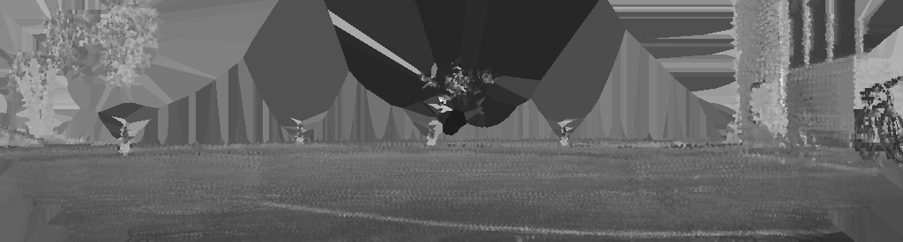

Range image reconstructed from point cloud with filtered sky

Range image reconstructed from point cloud with unfiltered sky
To detect the target's starting location in outdoor scenarios, we use a custom YOLOv5 model trained on panoramic signal images generated by an Ouster LiDAR.
We generate our own range images using a combination of depth and intensity values from a solid-state LiDAR point cloud.
Using only intensity or distance to detect drones from the background becomes challenging for the YOLO model due to the proximity to ground and walls as well as the reflectivity of both the background
and the drone being similar.
To minimize noise and artifacts when creating a single image, we first integrate a total of 30 frames. Later, the 3D point cloud is projected onto a 2D plane, taking into account both the field of view and
image resolution. Normalization is applied to ensure appropriate contrast in the resulting image.
Upon obtaining the preliminary 2D image, its quality is enhanced through filtering and interpolation: we first identify areas with zero values and substitute them with constants to prevent
visual discontinuities, then, we use binary thresholding and a nearest-neighbor interpolation to fill in missing or noisy regions, which results in smoother and more accurate images.
There are two distinct cases that lead to zero-valued pixels after point cloud projection: the sky and other background regions where the emitted laser fails to reflect, and
areas within the environment where objects might be present but the LiDAR does not scan. Differentiating between these two cases is crucial for the task of image completion, as it allows for an accurate understanding
of the context surrounding the missing pixels. Here we use average filtering to distinguish the environment of the sky and the objects that the LiDAR fails to scan, we change the value of the sky to 255 (white),
so that we can filter it out and complete the pixels with a value of 0.